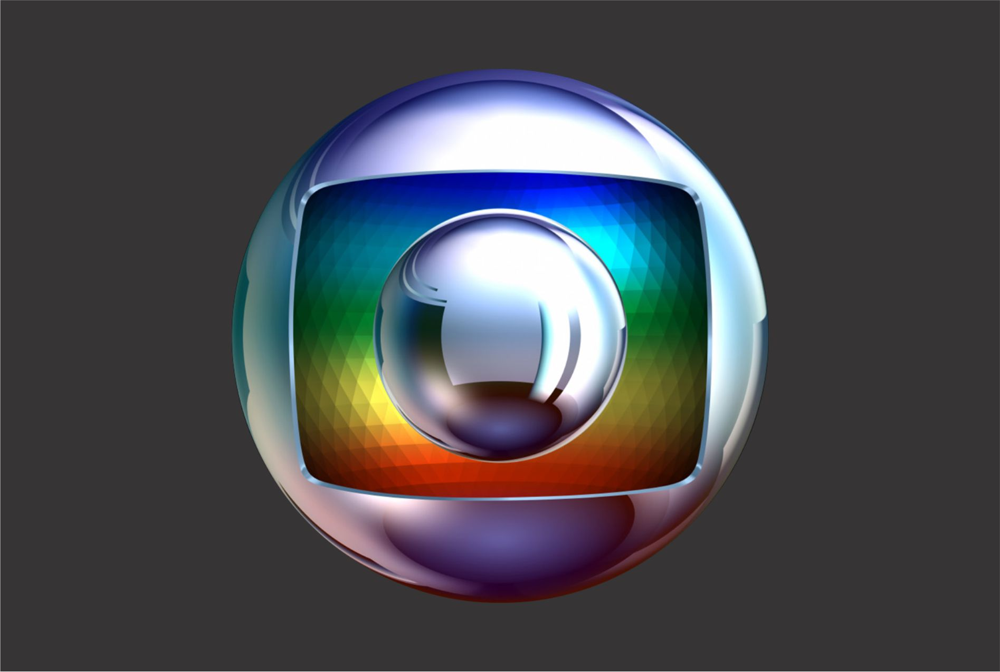
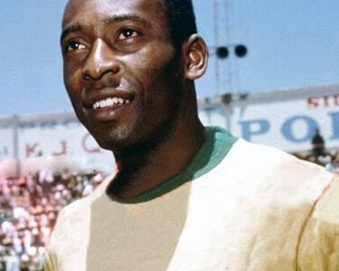
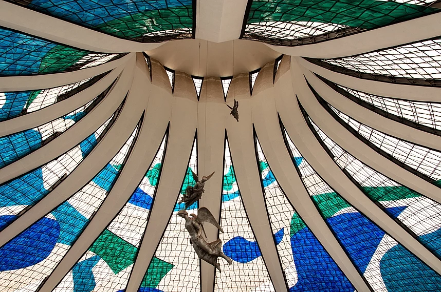

BEM-VINDO À WIKIPÉDIA!
Explorar os Artigos
Artigo em Destaque
A Rede Globo é uma das maiores emissoras de televisão do Brasil e uma das mais importantes do mundo. Fundada em 26 de abril de 1965 pelo empresário Roberto Marinho, a Globo se destacou ao longo das décadas por sua programação diversificada e de qualidade, alcançando milhões de telespectadores diariamente.
Com sede no Rio de Janeiro, a Globo possui uma extensa rede de afiliadas espalhadas por todo o país, levando entretenimento, informação e cultura para diferentes regiões e públicos. Seus programas de televisão abrangem uma variedade de gêneros, incluindo novelas, jornalismo, esportes, programas de auditório, séries e filmes.
As novelas da Globo são especialmente conhecidas por sua qualidade de produção e storytelling envolvente, conquistando telespectadores dentro e fora do Brasil. Títulos como "Vale Tudo", "Avenida Brasil" e "A Favorita" se tornaram verdadeiros fenômenos culturais, marcando gerações e influenciando a cultura brasileira.
Além das novelas, a Globo é reconhecida por seus programas jornalísticos, como o Jornal Nacional, o mais antigo telejornal em exibição no país, e o Fantástico, programa dominical que aborda temas variados, desde reportagens investigativas até entretenimento e curiosidades.
No campo esportivo, a Globo tem papel fundamental na cobertura e transmissão dos principais eventos esportivos do Brasil e do mundo, incluindo o Campeonato Brasileiro de Futebol, a Copa do Mundo FIFA e os Jogos Olímpicos.
Ao longo de sua história, a Rede Globo enfrentou desafios e críticas, mas também acumulou uma legião de fãs e admiradores. Seu impacto na cultura e na sociedade brasileira é inegável, tornando-a uma das instituições mais importantes e influentes do país.

03 de Junho
No dia 03 de junho comemora-se o Dia Mundial do Administrador de Pessoal (International People's Day), uma data dedicada a reconhecer e valorizar o trabalho dos profissionais que atuam na gestão de recursos humanos e no desenvolvimento das pessoas dentro das organizações.
Este dia é uma oportunidade para celebrar o papel fundamental que os administradores de pessoal desempenham na promoção do bem-estar dos colaboradores, na construção de equipes de sucesso e no impulsionamento do crescimento das empresas. É uma ocasião para destacar a importância do capital humano e para refletir sobre as melhores
práticas de gestão de pessoas no ambiente de trabalho.
Sabia que...
O Brasil é o único país a ter participado de todas as Copas do Mundo de Futebol desde a primeira edição, em 1930, no Uruguai. Desde então, a seleção brasileira de futebol conquistou o título mundial em cinco ocasiões: em 1958, 1962, 1970, 1994 e 2002. Essa consistência e
sucesso no futebol mundial contribuíram para tornar o Brasil uma referência global no esporte, com uma das seleções mais respeitadas e reconhecidas internacionalmente.

Imagem do Dia

Interior da Catedral Metropolitana de Brasília, Brasil. Desenhada por Oscar Niemeyer e projetada por Joaquim Cardozo. Concluída e consagrada em 31 de maio de 1970, a catedral é uma estrutura hiperboloide construída com 16 colunas de concreto, pesando 90 toneladas cada.
Na praça de acesso à catedral estão quatro esculturas de bronze de 2,5 metros de altura representando os quatro Evangelistas, criadas pelos escultores Alfredo Ceschiatti e Dante Croce em 1968. Também fora da catedral, à direita, como visitantes de frente para a entrada, ergue-se um campanário de 20 metros de altura contendo quatro grandes sinos doados por espanhóis residentes no Brasil e fundidos em Miranda de Ebro. Na entrada da catedral há um pilar com passagens da vida de Maria, mãe de Jesus, pintadas por Athos Bulcão.